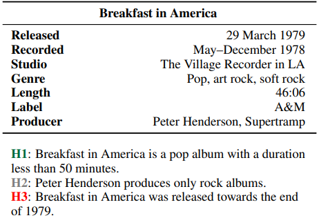

Enhancing Tabular Reasoning with Pattern Exploiting Training
About
Recent methods based on pre-trained language models have exhibited superior performance over tabular tasks (e.g., tabular NLI), despite showing inherent problems such as not using the right evidence and inconsistent predictions across inputs while reasoning over the tabular data (Gupta et al., 2021). In this work, we utilize Pattern-Exploiting Training (PET) (i.e., strategic MLM) on pre-trained language models to strengthen these tabular reasoning models' pre-existing knowledge and reasoning abilities. Our upgraded model exhibits a superior understanding of knowledge facts and tabular reasoning compared to current baselines. Additionally, we demonstrate that such models are more effective for underlying downstream tasks of tabular inference on INFOTABS. Furthermore, we show our model's robustness against adversarial sets generated through various character and word level perturbations.
TLDR; We enhance the model's reasoning via prompt based learning, i.e., PET, to extract knowledge from semi-structured tables.
The Tabular Inference Problem
Given a premise table, the task is to determine whether given hypothesis is true (entailment), false (contradiction), or undetermined (neutral, i.e. tabular natural language inference. Below is an example from the INFOTABS dataset:

Here, H1 is entailed, H2 is neutral and H3 is contradiction
Motivation
Recent work mostly focuses on building sophisticated neural models. We study the following questions in regards to the tabular reasoning problem.
- Implicit Knowledge is Required for Reasoning: The model must identify relevant rows and verify the hypothesis. This approach may call for using various abilities, including commonsense and temporality.
- Robustness is Critical for Model Evaluation: Tabular reasoning models typically fail on modest input modification, highlighting the model's poor robustness and generalizability limit. Thus, evaluating reasoning models on adversarial sets generated by input perturbations becomes vital.
Our Contributions
The following are the our key contributions in this work:
- Created prompts to determine if existing models can infer from knowledge.
- Leveraged ADAPET to strengthen model reasoning via extracting knowledge from tables.
- Our method retains knowledge whilst boosting performance on downstream NLI task.
- These findings are further supported by results obtained on numerous adversarial test sets.
◈ Evaluation of Pre-training Knowledge
To examine how pre-training affects knowledgebased reasoning for tabular data, we focus on two types of knowledge,
Factual Knowledge
Factual knowledge is the awareness of specific factual knowledge about entities.
Example: <mask> is a pop album with a duration less than 50 min.
<mask> = Breakfast in America ➡ Factual knowledge (from H1)
Relational Knowledge
Relational knowledge is the awareness of possible right relations between two distinct entities.
Example: Breakfast in America was <mask> towards the end of 1979.
<mask> = released ➡ Relational knowledge (from H3)
We use Part-of-speech tagging to recognizes nouns and verbs, and we use them to mask names and numbers for the creation of prompts.
◈ Enhancing Tabular Reasoning
Utilizing ADAPET, the tabular NLI task is reconstructed as cloze-style questions.
<premise> ? <mask> <hypothesis>
Label Loss
"What is the most suitable label given the input?" i.e., The model is tasked with predicting the masked vocabulary word.

Label Conditioning
"Given the correct inference label, what is the appropriate, relevant context?" i.e., Predicting the randomly-mask token from vocabulary given its label.

Conclusion
In this work, we have validated the effects of factual and relational knowledge in the language model via prompts for tabular reasoning. Through prompt based learning, we extracted knowledge from semi-structured tables and further improved the model's reasoning capabilities. Our intensive experiments on the InfoTabS demonstrate that our approach can conserve knowledge and enhance tabular NLI performance. The conclusions hold up well when tested against carefully crafted adversarial test sets based on character and word-level perturbations.
People
The following people have worked on the paper "Enhancing Tabular Reasoning with Pattern Exploiting Training":


Acknowledgement
Authors thank members of the Utah NLP group for their valuable insights and suggestions at various stages of the project; and AACL-IJCNLP 2022 reviewers for their helpful comments. Vivek Gupta acknowledges support from Bloomberg's Data Science Ph.D. Fellowship.